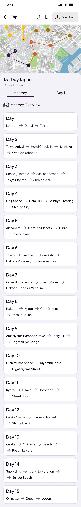
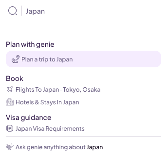

AladdinGenie
An AI trip planner that checks your visa before it plans your trip. A conversational planner that builds a bookable, fully editable itinerary, designed for iOS and web.
- Role
- Product designer, end to end
- Client
- UK-based client, via Hire My Idea
- Timeline
- Eight weeks, Jun–Jul 2026
- Surfaces
- iOS app and responsive web, same flow on both
- Status
- Version 1 designed to handoff, dev-ready. Dropped before launch when the company wound down.
01The problem
AI trip planners are good at generating a dreamy itinerary and quiet about whether you're allowed to take it. For an Indian passport holder, or anyone outside the visa-free club, the first question isn't "Tokyo or Kyoto?" but "can I get in, and how long will that take?" Most planners never ask. The user finds out after they've fallen in love with the plan.
Aladdin's brief was an AI-first travel app where Genie takes you from a one-line request to a booked trip: destinations, stays, transport between cities, day-by-day experiences, flights and payment. I designed the Genie flow across iOS and web, plus the surrounding app.
02What I designed
Conversation
- Clarifying questions with tap-to-answer chips
- Visa check and guidance card before any itinerary
- Thinking states, edit and regenerate
- Chat and Trip as two views of one plan
Trip builder
- Destinations with Relaxed, Balanced, Fast pacing
- Stays per leg, routes with transport per hop
- Day-by-day itinerary with swap, remove, add
- Route map, download and share
Booking and web
- Flights, stays, payment, confirmation, ticket
- Web as three panes: chat, plan, map
- Guided search across the product
03Visa before itinerary
The obvious flow is to generate the trip and mention the visa at the end. It demos beautifully and sets people up to be disappointed. I flipped it. When a destination needs a visa the user doesn't hold, Genie says so before it builds anything, with two chips: "Yes, it's valid" or "No, I don't have one".
If the answer is no, Genie still plans the full trip and drops a visa card into the conversation: processing time, maximum stay, passport validity, fee, and a Start Application button to the official centre. It also does the date maths, "On track for Jan 5. Apply by Dec 12", and offers to slot that deadline into the trip. Uploading a passport works the other way too: Genie unlocks the visa-free destinations for that passport.
Rejected: a visa badge on the destination card linking to a help page. Accurate, but it treats the hardest step of the trip as a footnote.
04Chat asks, cards do the heavy lifting
Chat is great for intent and terrible for comparison. Nobody wants to pick six cities out of a paragraph. So Genie asks only what it needs, where from, who's coming, what's your vibe, with chips so each answer is one tap. Then it hands off to a card: "Top destinations for your trip. Open."
The card opens a purpose-built screen: destination cards with photos, dates and price, a pace toggle that re-routes the trip, and a Generate Trip button that returns to the conversation with the choice recorded as a message. The same pattern repeats for stays, routes, experiences and booking. It keeps the model's job narrow: Genie suggests and explains, the user chooses in an interface built for choosing.
05Nothing Genie generates is locked
Trust in an AI planner comes from being able to overrule it cheaply. If changing one hotel means regenerating the whole trip, people stop trusting the trip. So every layer is editable in place.
- Destinations: select or deselect any stop, or switch the pace.
- Routes: each leg shows its transport, duration and price. Swap plane for train or reorder.
- Stays: every leg can be removed or re-dated.
- Experiences: swap, remove, or add with search by food, nightlife or culture.
- Dates: change them in chat and Genie regenerates with everything else preserved.
06The finished trip is one bookable object
Genie builds the trip as a single structured plan, city by city: arrival, transfer, stay, the day's experiences, local transfers. Every item keeps its swap and remove controls. At the bottom sits one button, Book this Trip, and flights, stays and transfers are booked together. Download and share live in the header so the plan can reach the people travelling with you.
Why one object: a list of separate bookings means re-checking five things after every change. One trip means a date change ripples through everything and the user confirms once.


07Craft and system
- Genie has a voice. Warm and a little playful ("Japan for 15 days? Now we're talking"), direct when it matters ("Before I build it, Japan needs a tourist visa"). The tone was designed, not left for copy later.
- One system, two platforms. iOS and web share components, colour and type. On web the cards expand into panes instead of sheets, so nothing has to be relearned.
- Guided search, from client feedback. The client's two notes on the first version were the colour palette and UI polish, and the search bar. Search became guided: type a country and it offers Plan with Genie, Book flights and stays, Visa guidance, or ask Genie anything. One box becomes the front door to the product.

08Outcome
Version 1 of Genie reached dev-ready on iOS and web, with a clickable prototype of the chat-to-booking flow and annotated handoff. Client feedback came on two things, colour and UI polish and the search bar, both addressed. The project was dropped before launch when the company wound down.
What I'd have measured
- Trips abandoned at the visa step. High means the honesty is costing us. Low with rising bookings means it's earning trust.
- Edits per trip before booking. A healthy number means people are customising. Zero means they don't believe they can.
- Chat to first card, card to generated trip. How quickly intent becomes a plan.